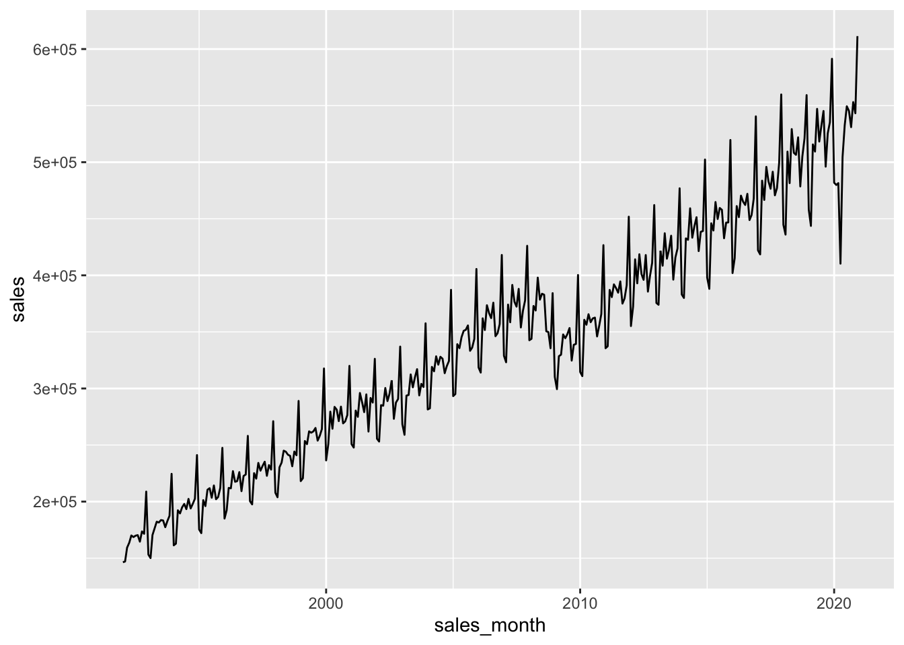

pg <-dbConnect(RPostgres::Postgres(), bigint ="integer")dbExecute(pg, "SET search_path TO sql_book")
Tanimura (2021) points out that often “timestamps in the database are not encoded with the time zone, and you will need to consult with the source or developer to figure out how your data was stored.” When pushing data to a PostgreSQL database, I use the timestamp with time zone type as much as possible.
Tanimura (2021) provides the following example, which is interesting because the west coast of the United States would not be on the PST time zone at that time of year. Instead, it would be on PDT.
SELECT'2020-09-01 00:00:00 -0'ATTIMEZONE'pst';
1 records
timezone
2020-08-31 16:00:00
SELECT'2020-09-01 00:00:00 -0'ATTIMEZONE'pdt';
1 records
timezone
2020-08-31 17:00:00
I think most people barely know the difference between PST and PDT and even fewer would know the exact dates that one switches from one to the other. A better approach is to use a time zone that encodes information about when PDT is used and when PST is used. In PostgreSQL, the table pg_timezone_names has information that we need.
SELECT*FROM pg_timezone_namesWHERE name ~ '^US/';
Displaying records 1 - 10
name
abbrev
utc_offset
is_dst
US/Alaska
AKDT
-08:00:00
TRUE
US/Pacific
PDT
-07:00:00
TRUE
US/Eastern
EDT
-04:00:00
TRUE
US/Michigan
EDT
-04:00:00
TRUE
US/Arizona
MST
-07:00:00
FALSE
US/Indiana-Starke
CDT
-05:00:00
TRUE
US/Aleutian
HDT
-09:00:00
TRUE
US/Hawaii
HST
-10:00:00
FALSE
US/East-Indiana
EDT
-04:00:00
TRUE
US/Central
CDT
-05:00:00
TRUE
SELECT*FROM pg_timezone_namesWHERE abbrev IN ('PDT', 'PST') ORDERBY name DESCLIMIT5;
As discussed in Tanimura (2021), PostgreSQL has a rich array of functions for converting dates and times and extracting such information as months and days of the week.
a_time_df <-tbl(pg, sql("SELECT '2020-10-04 12:33:35 US/Pacific'::timestamp with time zone AS a_time"))a_time_df %>%mutate(a_trunced_time =date_trunc('month', a_time))
<SQL>
SELECT *, date_trunc('month', "a_time") AS "a_trunced_time"
FROM (SELECT '2020-10-04 12:33:35 US/Pacific'::timestamp with time zone AS a_time) "q01"
retail_sales <-tbl(pg, "retail_sales")retail_sales %>%filter(kind_of_business =='Retail and food services sales, total') %>%select(sales_month, sales) %>%arrange(sales_month) %>%ggplot(aes(x = sales_month, y = sales)) +geom_line()

SELECT date_part('year',sales_month) as sales_year,sum(sales) as salesFROM retail_salesWHERE kind_of_business ='Retail and food services sales, total'GROUPBY1;
SELECT date_part('year',sales_month) as sales_year, kind_of_business, sum(sales) as salesFROM retail_salesWHERE kind_of_business IN ('Book stores','Sporting goods stores','Hobby, toy, and game stores')GROUPBY1,2ORDERBY1;
Displaying records 1 - 10
sales_year
kind_of_business
sales
1992
Sporting goods stores
15583
1992
Hobby, toy, and game stores
11251
1992
Book stores
8327
1993
Hobby, toy, and game stores
11651
1993
Sporting goods stores
16791
1993
Book stores
9108
1994
Sporting goods stores
18825
1994
Book stores
10107
1994
Hobby, toy, and game stores
12850
1995
Hobby, toy, and game stores
13714
retail_sales %>%filter(kind_of_business %in%c('Book stores','Sporting goods stores','Hobby, toy, and game stores')) %>%mutate(sales_year =date_part('year', sales_month)) %>%group_by(sales_year, kind_of_business) %>%summarize(sales =sum(sales, na.rm =TRUE), .groups ="drop") %>%arrange(sales_year) %>%ggplot(aes(x = sales_year, y = sales, color = kind_of_business)) +geom_line() +theme(legend.position ="top")
<SQL>
SELECT
"sales_year",
MAX(CASE WHEN ("kind_of_business" = 'mens') THEN "sales" END) AS "mens_sales",
MAX(CASE WHEN ("kind_of_business" = 'womens') THEN "sales" END) AS "womens_sales"
FROM (
SELECT "sales_year", "kind_of_business", SUM("sales") AS "sales"
FROM (
SELECT
"sales_month",
"naics_code",
CASE WHEN ("kind_of_business" = 'Women''s clothing stores') THEN 'womens' WHEN NOT ("kind_of_business" = 'Women''s clothing stores') THEN 'mens' END AS "kind_of_business",
"reason_for_null",
"sales",
date_part('year', "sales_month") AS "sales_year"
FROM "retail_sales"
WHERE ("kind_of_business" IN ('Men''s clothing stores', 'Women''s clothing stores'))
) "q01"
GROUP BY "sales_year", "kind_of_business"
) "q02"
GROUP BY "sales_year"
Warning: Missing values are always removed in SQL aggregation functions.
Use `na.rm = TRUE` to silence this warning
This warning is displayed once every 8 hours.
<SQL>
SELECT *, ("sales" * 100.0) / "total_sales" AS "pct_total_sales"
FROM (
SELECT *, SUM("sales") OVER (PARTITION BY "sales_month") AS "total_sales"
FROM "retail_sales"
WHERE ("kind_of_business" IN ('Men''s clothing stores', 'Women''s clothing stores'))
) "q01"